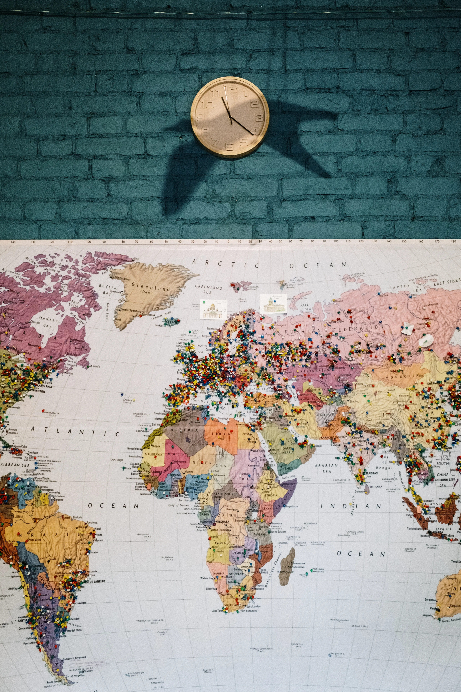
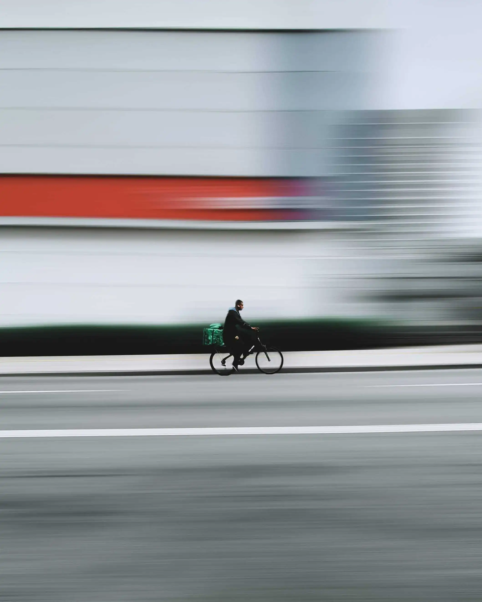
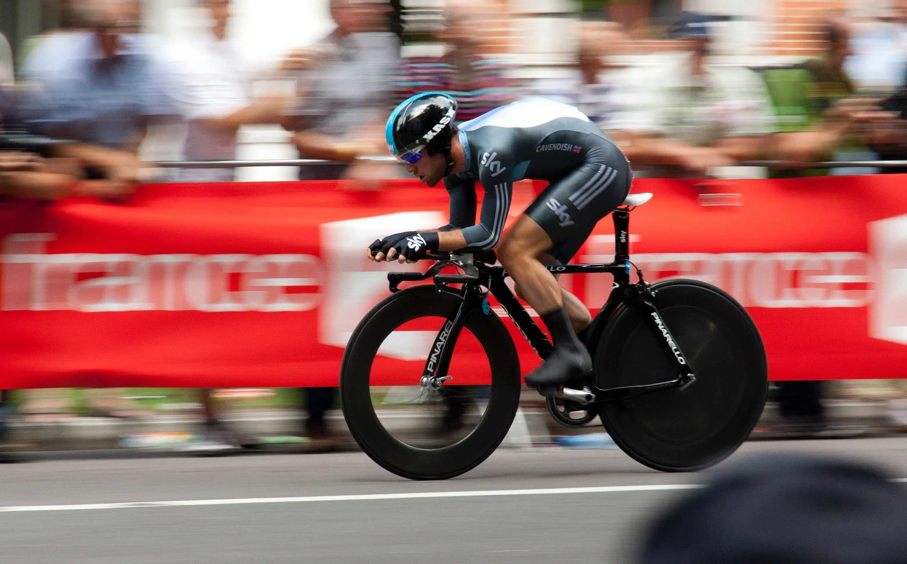

Focus on your sport.
Tracking is on us
Worry no more about distance and routes covered and spend more time training, practicing and developing.
Connect with fellow athletes. Share training stats and ranks. Take on challenges locally and cross-border.
Share newly discovered routes with friends. All on trakk.

Track and record your sporting activities
Take on challenges and attain new rankings

Cover and replay activities on the go
